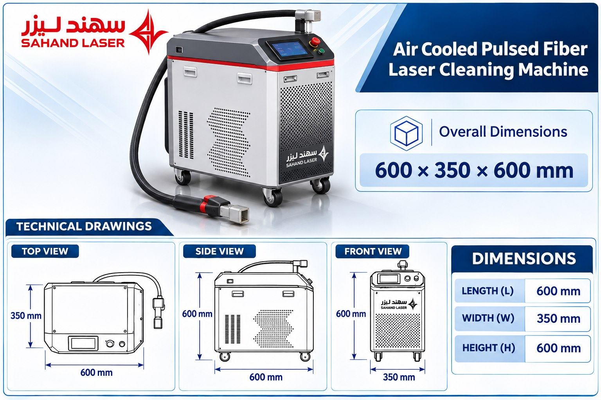

مهندسی نور.
قدرت تولید.
از برش دقیق ورق و لوله تا جوش و حکاکی؛ راهکار متناسب با تولید شما، همراه با نصب، آموزش و پشتیبانی سهند لیزر.
کشف دستگاه ۶۰۲۰ ↓SH6020R / برش ورق و لوله
یک دستگاه. چند مسیر تولید.
دستگاه برش فایبر ۶۰۲۰ دومیز با روتاری — برای دیدن اجزا اسکرول کنید.
میزهای کار · پل و هد برش · روتاری · کنترل دستگاهمشخصات محصول ↗
دقت در انتخاب.
اطمینان در تولید.
جنس و ضخامت قطعه، ظرفیت تولید و نوع کاربرد، نقطه شروع انتخاب دستگاه است. محصولات و خدمات سهند لیزر را متناسب با نیاز کارگاه یا خط تولیدتان بررسی کنید.
تجهیزات سهند لیزر
برای کار بعدی شما.

دستگاه برش لیزر فایبر تکمیز SH3015
مشاهده محصول ←
دستگاه برش لیزر دو میز فایبر با روتاری SH6020R
مشاهده محصول ←
دستگاه برش لیزر فایبر کابیندار SH6020C
مشاهده محصول ←
دستگاه جوش لیزر Smart Series / Mini 4-in-1
مشاهده محصول ←
دستگاه فایبر مارکینگ 50 وات
مشاهده محصول ←
دستگاه تمیزکاری لیزر پرتابل 200 وات
مشاهده محصول ←همراه تولید شما
همه خدمات ↗